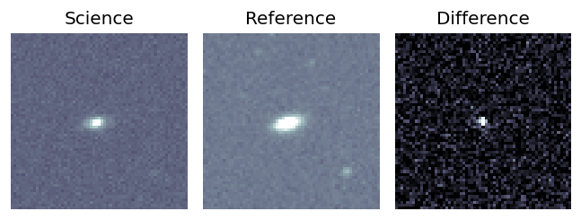
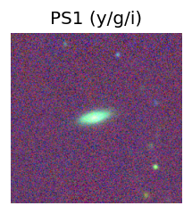
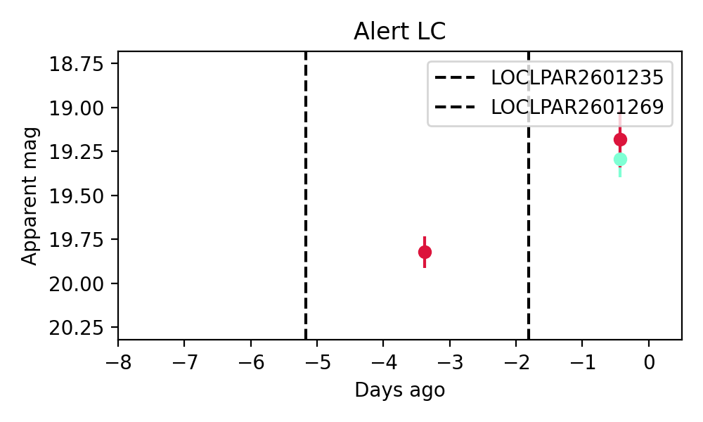
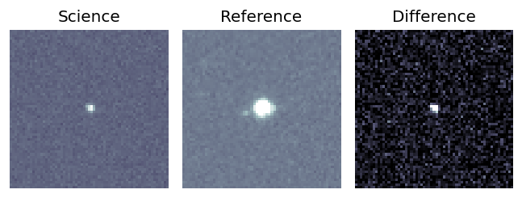
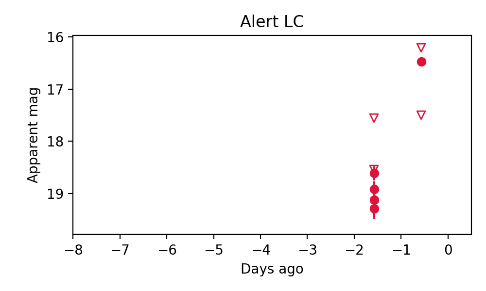
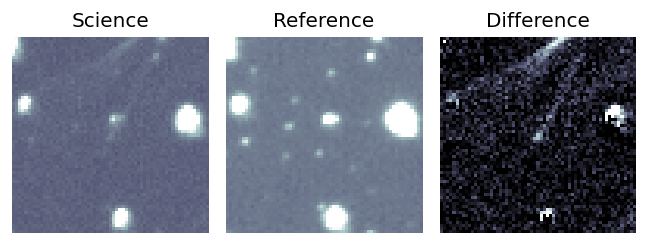
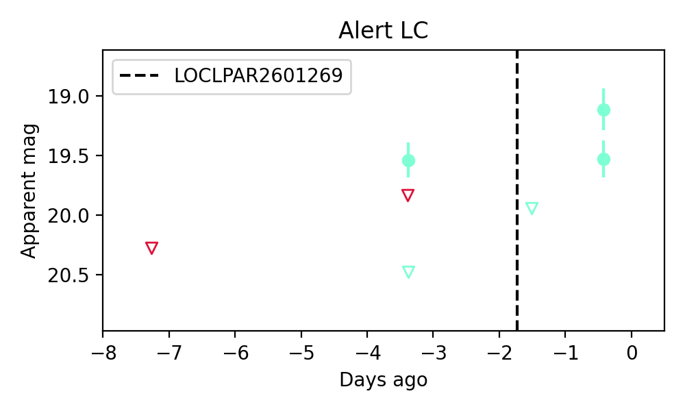

Candidate List 20260128Previous Day Next Day
Section 1: New Sources (age<1d) Section 2: Old (1-5d) sources observed last nightplaceholder
Section 2: Older Sources Observed Last Night (3)
0. ZTF26aadsbxh (FBOT?) [Back to Top] [Share] [Trigger Swift] [Fritz] [Lasair]RA, Dec: 160.99766, 3.87287 10h43m59.44s, 3d52m22.34sGalactic (l, b): 244.71099, 51.717 WARNING: -3.86 deg from ecliptic plane ext(g-r) = 0.044
TESS: Sectors [45 46 72]
PS1: 0 sources in 3 arcsec
LegacySurvey: 1 sources in 3 arcsec Closest: d = 1.01 arcsec, 111.0 deg (east of north) photoz=0.13 (68% bounds 0.11, 0.15), type=SER peak abs mag = -19.88 (68% bounds -19.36, -20.2)

Extinction-corrected gr color:
From alerts: 0.07 +/- 0.19 mag
Consistent with synchrotron, g-r>0!
Rise Rate:
g: 0.15 mag/day
r: 0.22 mag/day
i: -99 mag/day
Fade Rate:
g: -99 mag/day
r: -99 mag/day
i: -99 mag/day
1. ZTF26aadyofl (FBOT?) [Back to Top] [Share] [Trigger Swift] [Fritz] [Lasair]RA, Dec: 339.22761, 4.54545 22h36m54.63s, 4d32m43.63sGalactic (l, b): 72.05103, -44.63184 ext(g-r) = 0.086

TESS: Sectors [42 56 92]
PS1: 0 sources in 3 arcsec
LegacySurvey: 1 sources in 3 arcsec Closest: d = 0.66 arcsec, 24.8 deg (east of north) photoz=0.13 (68% bounds 0.11, 0.16), type=PSF peak abs mag = -22.58 (68% bounds -22.23, -23.02)

Rise Rate:
g: -99 mag/day
r: 2.4 mag/day
i: -99 mag/day
Fade Rate:
g: -99 mag/day
r: -99 mag/day
i: -99 mag/day
2. ZTF26aadzamw (Afterglow?) [Back to Top] [Share] [Trigger Swift] [Fritz] [Lasair]RA, Dec: 112.61718, -11.24888 7h30m28.12s, -11d-14m-55.98sGalactic (l, b): 227.40012, 3.38183 ext(g-r) = 0.291

TESS: Sectors [ 7 34 88 111 112]
PS1: 0 sources in 3 arcsec
LegacySurvey: 0 sources in 3 arcsec

Extinction-corrected gr color:
From alerts: -0.58 +/- 99 mag
Rise Rate:
g: 0.76 mag/day
r: -99 mag/day
i: -99 mag/day
Fade Rate:
g: 0.22 mag/day
r: -99 mag/day
i: -99 mag/day